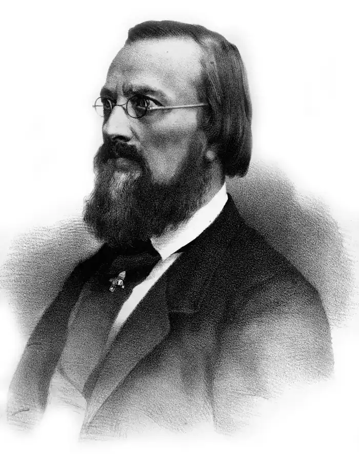
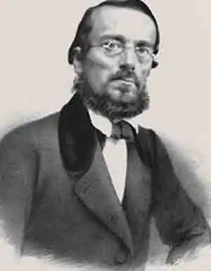

Микола Іванович Костомаров
(1817 — 1885)
Костомаров Микола Іванович [псевдоніми і криптоніми — Ієремія Галка, Иван Богучаров, Николай Н., Равви, Н. К., Н. К-ва та ін.] — український і російський історик, громадсько-політичний і культурний діяч, письменник, публіцист, критик, етнограф і фольклорист, член-кореспондент Петербурзької АН з 1876р. Народився 4(16) травня 1817р. в слободі Юрасовці, тепер Ольховатського р-ну Вороніжської області в сім'ї російського поміщика, мати — українка з кріпаків. Закінчив 1837р. історико-філологічний ф-т Харківського університету. Під впливом українських фольклорних збірників захопився збиранням та вивченням народної поезії, 1844р. захистив магістерську дисертацію "Об историческом значении русской народной поэзии". По закінченні університету деякий час служив юнкером в уланському полку, потім викладав історію в гімназіях Харкова, Рівного, Києва, зокрема 1845р. — ст. учитель Першої київської гімназії, з 1846р. — ад'юнкт-професор кафедри російської історії Київського університету. У 1845 — 46 рр. разом з М. Гулаком і В. Білозерським заснував Кирило-Мефодіївське братство, де брав активну участь у складанні програмних документів — "Книг буття українського народу", "Статуту Слов'янського товариства св. Кирила і Мефодія", відозв "До братів-українців", "До братів-росіян", "До братів-поляків"; автор записки про об'єднання слов'янських народів. Весною 1847р. Костомарова арештовано. Після річного ув'язнення в казематі "Третього відділу", а потім у Петропавловській фортеці його вислано до Саратова. Тут він служив (1848 — 1857) у Статистичному комітеті; у 1848 — 1850 рр. був перекладачем при губернському управлінні, редактором неофіційної частини "Саратовских губернских ведомостей", близько зійшовся з М. Чернишевським, О Пипіним, Д. Мордовцем. 1856р. Костомарова амністовано. З 1858р. жив у Петербурзі. В 1859 — 1862 рр. — екстраординарний професор кафедри російської історії Петербурзького університету. Влаштовував літературні "вівторки", куди сходилися земляки-українці (П. Куліш, О. Стороженко, В Горленко та ін.). Підтримував тісні зв'язки з М. Добролюбовим, В. Стасовим, М. Ге, О. Бодянським; співробітничав у журналах "Современник", "Вестник Европы" (один із його засновників), "Отечественные записки", "Русское слово", "Русская старина", "Киевская старина" та ін. Виступив із статтєю "Україна" у журналі "Колокол". Брав діяльну участь у створенні журналу "Основа", у виробленні його національно-культурної програми. На початку 1862р. залишає працю в університеті і зосереджується на науковій роботі. Був членом-редактором Київської археографічної комісії; за його редакцією у 1863 — 1884 рр. видано 12 томів "Актов Южной и Западной России" з історії України і Білорусії 14—17 ст. Показуючи близькість історичної долі і культурного життя українського та російського народів у ст. "Две русские народности" (1861), Костомаров розрізняв визначальні риси національного характеру українців та росіян. Автор праць з історії: "Начало Руси" (1860), "Мысли о федеративном начале в древней Руси" (1861), "Севернорусские народоправства во времена удельно-вечевого уклада" (1864), "Вече и вечевое устройство в древней Руси" (1864) та ін. Написав "Русскую историю в жизнеописаниях ее главнейших деятелей" (т. 1—7, 1873 — 88). Праці з історії України присвячені здебільшого періодові 15—17 ст.: "Иван Свирговский, украинский гетман XVI века" (1855), "Богдан Хмельницкий и возвращение Южной Руси к России" (1857), "Черты народной южнорусской истории" (1861), "Южная Русь в конце XVII века" (1867), "Руина" (1879 — 80), "Мазепа" (1882) та ін. Наукові дослідження Костомарова здобули широке визнання, його обрано почесним членом Югослов'янської академії наук і мистецтв, сербського вченого товариства "Друшество" й ін. Історичні праці вченого відзначаються образністю викладу. В історію української літератури Костомаров увійшов як письменник-романтик: віршові збірки "Украинские баллады" (1839), "Вітка" (1840), історичні п'єси. Поезія Костомарова характеризується широкою проблематикою і розмаїттям жанрових форм: вірші-балади, в основу яких покладено народні вірування, легенди та історичні перекази ("Стежки", "Посланець", "Мана", "Брат з сестрою", "Ластівка", "Явор, тополя й береза" та ін.); ремінісценції на історичні теми (вірші "Згадка", "Могила" та ін.), вірші-пісні романсового характеру, стилізації народної ліричної пісні ("Стежки", "Поцілунок", "Рожа", "Горлиця", "Голубка", "Нічна розмова", "Вулиця", "Зозуля"), особистісно-психологічна лірика з її наріканням на життя, тугою за недосяжним щастям, молодістю ("Туга", "Дівчина", "Сон", "Ой ішов козак...", "Зірка", "Зорі" та ін.). Громадянська лірика Костомарова пройнята мотивами боротьби з тиранією, поетизацією козацької слави України ("Давнина", "Діти слави, діти слави!", "На добраніч"). Твори на історичні теми нерідко у формі алюзій спроектовані на проблеми сучасності ("Юпитер светлый плывет по зеленым водам киммерийским", "Співець Митуса" та ін.). Костомаров одним з перших в українській поезії запровадив гекзаметр (вірш "Эллада") та елегійний дистих (вірш "Нічна розмова"), п'ятистопний ямб. Особливостями його вірша є багатство ритміки, відсутність регулярної строфіки, чергування коломийкового вірша з говірним віршем. Для громадянської лірики характерні ораторсько-публіцистичні інтонації, риторичні засоби. Костомаров — автор історичних трагедій "Сава Чалий" (1838) і "Переяславська ніч" (1841), які відзначаються новизною проблематики. Романтичні драми "Кремуций Корд" (1849), "Эллины Тавриды" (1883), "Украинские сцены из 1649 года" (незакін.) позначені тираноборчими мотивами. Костомаров відомий як прозаїк: повість "Сорок лет" (1840, переробл., доп. й видана 1902р. Л. Толстим), "Казка про дівку-семилітку" (1840; опубл. 1860), літературні казки "Торба" й "Лови" (обидві — 1843), повість з часів повстання С. Разіна "Сын" (1865), історична хроніка з часів Івана Грозного "Кудеяр" (1875), повісті "Холуй" (1878), "Черниговка" (1881) — з українського життя 17—18 ст. По смерті Костомарова 1886р. вийшла в Петербурзі збірка його прозових творів "Рассказы И. Богучарова (Николая Костомарова)". М. І. Костомаров переклав частину "Краледворського рукопису", окремі твори Дж. Байрона, В. Шекспіра (пісня Дездемони з трагедії "Отелло"), з чеської ("Ягода", "Рожа") і польської ("Панич і дівчина") народної поезії. Костомаров — один з перших українських літературних критиків. З його історичних і суспільних поглядів випливає розуміння народної поезії як втілення національного духу, а також індивідуальної творчості як продовження фольклорного процесу на новому рівні (ст. "Об историческом значении русской народной поэзии", 1843; рецензія на "Кобзар" Т. Шевченка, 1860). З діяльністю Костомарова пов'язана поява в Україні культурно-історичної школи у літературознавстві. Ст. "Обзор сочинений, писанных на малороссийском языке" (1843) є по суті першою професійною критичною працею в українському літературознавстві. Костомаров приділяв увагу проблемі самобутності української літератури, її народності, з'ясуванню ідейно-естетичних функцій комічного в літературі — на прикладі творчості І. Котляревського і М. Гоголя ("Обзор сочинений, писанных на малороссийском языке"; рецензія на російський переклад "Народних оповідань" Марка Вовчка, 1859; "Воспоминание о двух малярах", 1861; "Слово о Сковороде по поводу рецензии на его сочинения в "Русском слове"", 1861; "Малороссийская литература", 1871, та ін.). Костомаров знав Т. Шевченка з 1846р. У рецензії на "Кобзар" (1860), "Воспоминании о двух малярах" (1861), книзі "Поэзия славян. Сборник лучших поэтических произведений славянских народов в переводах русских писателей" (1871) та в "Споминках про Шевченка" в празькому виданні "Кобзаря" (т. 2, 1876) оцінював творчість Т. Шевченка як всенародний скарб. У численних публіцистичних статтях ("Ответ на выходки газеты "Czas" и журнала "Revue Contemporaine""; "Правда полякам о Руси: по поводу статьи в "Revue Contemporaine"", "Правда москвичам о Руси", усі — 1861; "Мысли южно-русса", 1862; "О преподавании на народном языке в Южной Руси", 1863, та ін.), спрямованих проти реакційної політики російських і польських шовіністичних кіл, Костомаров відстоював історичне право української мови на самобутній розвиток. Але у період заборони українського друкованого слова в 70 — 80-і pp. та звинувачень Костомарова в "українофільстві" й "сепаратизмі" він приєднується до слов'янофільської концепції "літератури для домашнього вжитку". Цим він "можливо спрощував і звужував українську проблему, — писав М. Грушевський, — стараючися пропхнути її через урядове вухо" (Науково-публіцистичні і політичні писання Костомарова. К., 1928, с. XVIII). Помер Микола Костомаров 7(19) квітня 1885 року в Петербурзі. 150-річчя від дня народження М. І. Костомарова за рішенням ЮНЕСКО широко відзначено у всьому світі.